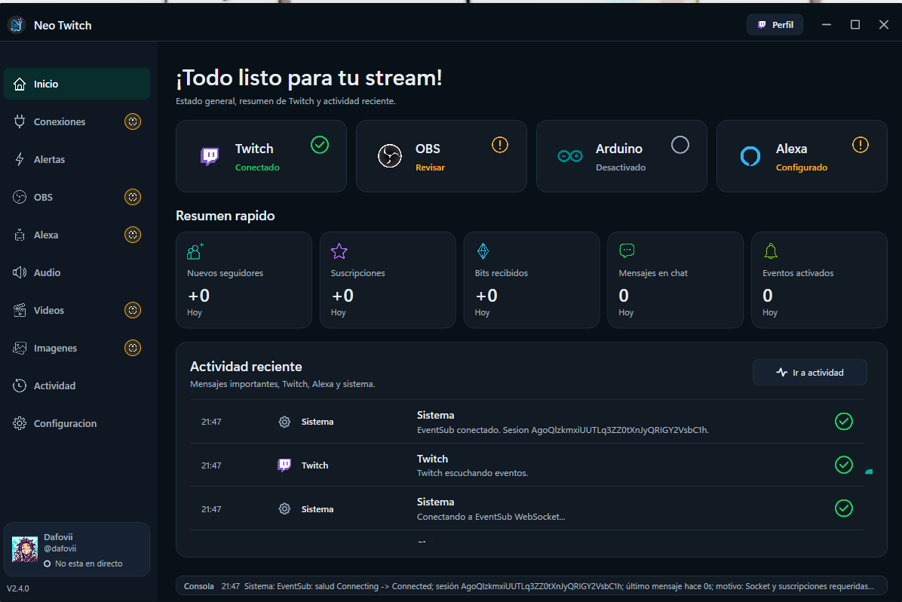

Herramienta de escritorio / 2025–2026
Neo Twitch
App Windows en .NET/WPF que convierte eventos de Twitch en alertas de stream: luces NeoPixel/Arduino, luces virtuales, audio local, mensajes de chat, escenas y medios en OBS, y eventos opcionales para Alexa.

Contexto
NeoTwitch centraliza la automatización de un stream desde una app de escritorio: el creador configura sus conexiones una vez y luego crea alertas para seguidores, suscripciones, raids, bits, comandos de chat y canjes de puntos.
Reto
Coordinar Twitch EventSub WebSocket, OBS, audio local, medios, chat, Arduino por USB/Serial y servicios externos sin que las alertas se acumulen, se disparen fuera de directo o rompan la configuración del streamer.
Aporte
Diseño e implementación de la aplicación .NET/WPF con reglas por evento, cola de alertas, estados de servicios, actividad reciente, mini consola, backups, importación/exportación, modo claro/oscuro, actualización desde GitHub e integraciones con OBS, Twitch y Arduino.
Pendientes
TODO: asset: traer al portafolio las capturas/GIF autorizados del README, incluyendo alerta configurada, efecto activado, OBS y NeoPixel, sin datos sensibles.